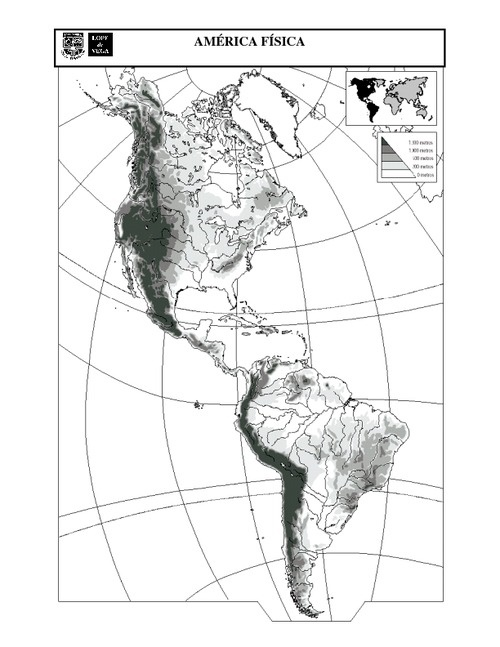

1) Escreva os nomes das principais (ao menos 5) populações pré-colombianas:
2)Trace, no mapa, as linhas com setas coloridas que representam a origem e o destino dos colonizadores europeus na América:
3) Leia as definições abaixo e, de acordo com seus conhecimentos sobre o continente americano, escreva:
Segundo o Dicionário da Língua Portuguesa, Novo Aurélio Século XXI, temos os significados das seguintes palavras:
Colônia: 1. Grupo de migrantes que se estabelecem em terra estranha. 2. Região pertencente a um Estado e situada fora do seu âmbito geográfico principal; possessão, domínio. 3. Indivíduos de uma nação que vivem em país ou cidade estrangeira e seus descendentes que lhes conservam as tradições, características culturais, religiosas, etc.
Colonizar: 1. Transformar em colônia. 2. Propagar-se ou alastrar-se por; invadir. 3. Exercer domínio.
Colonização: Ato ou processo de colonizar.
América Latina – países americanos que falam idiomas de origem latina (como o português, espanhol), exceto alguns países que falam inglês, holandês.
América Anglossaxônica – países americanos (Estados Unidos e Canadá) que falam idiomas de origem anglossaxã (como o inglês). Mas o Canadá, além do inglês, fala francês.
Como foi a colonização na América Latina e na América Anglossaxônica?
4) Abaixo temos o mapa do continente americano. Nele, pinte os oceanos de azul, cada região americana de uma cor (Norte, Central e Sul) e faça hachuras para diferenciar a América Latina da América Anglossaxônica. Não esqueça a legenda!
5) Observe o mapa abaixo e responda:

a) As áreas mais escuras correspondem a qual forma de relevo? Dê exemplos.
b) As áreas mais claras correspondem a qual forma do relevo? Dê exemplos.